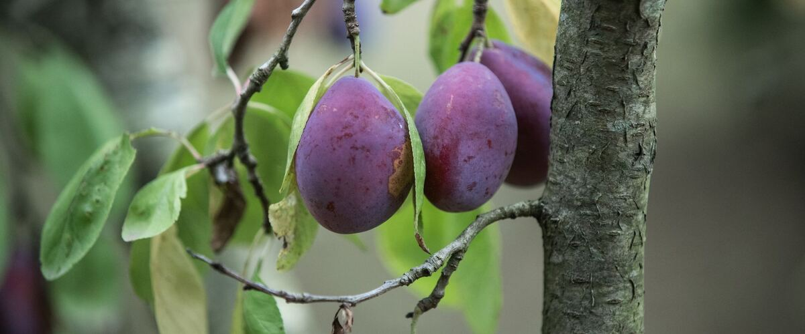

When to plant plum trees in Burns, OR
Plant plum trees in Burns Apr 30 – Jun 25.
- Difficulty
- Easy
- Sun
- Full sun
- Spacing
- 12 to 15 feet apart for dwarf or semi-dwarf trees
- Planting depth
- Graft union 2 to 3 inches above the soil
- Frost
- Hardy perennial; comes back every year
- First harvest
- First plums in three to five years
Why these dates
Burns's typical last spring frost is June 11. As a hardy perennial, this crop can go in about 6 weeks before that.
High desert and mountains. Central and high eastern Oregon. Frost is possible almost any month. Use row covers, wall-o-water or cloches for warm crops, and choose short-season varieties.
How to grow plum trees in Burns
- Pick a sunny spot with soil that drains well, and mix in an inch or two of compost.
- Plant plum trees Apr 30 – Jun 25, 12 to 15 feet apart for dwarf or semi-dwarf trees. Graft union 2 to 3 inches above the soil.
- Water deeply through the first two summers. Prune lightly in summer, not winter, which lowers the risk of silver leaf and canker. Thin heavy crops so branches don't snap.
- Harvest: Pick when the fruit is fully colored, slightly soft and comes off easily. Prune plums for drying should hang until they wrinkle slightly at the stem.
Key numbers
- 3–5Years to fruit
- Self-fertileEuropean plums
- Summer, in dry weatherWhen to prune
- Brown rotBiggest risk
Growing notes
What makes the difference in Northwest gardens, in plain language.
European or Japanese plums
European plums, including Italian prune and Stanley, bloom later and fruit on their own, which makes them the easiest choice for most Northwest gardens. Their dense, sweet flesh is great fresh, dried or baked. Japanese plums such as Shiro and Methley bloom earlier, have juicier fruit and ripen in mid-summer. Shiro sets a much better crop with another Japanese plum nearby, and Methley is a popular partner because it's partly self-fertile. In frost-prone spots, the earlier bloom of Japanese plums can get caught by a cold snap.
Why plums are pruned in summer
Plums and other stone fruits are prone to silver leaf and bacterial canker, which enter through pruning cuts in cool, wet weather. Cuts made in dry summer weather heal fast and stay clean. Prune lightly after harvest or in July, removing dead wood, crossing branches and tall upright shoots.
Heavy crops are common. Thin young fruit to 3 to 4 inches apart in early summer: the remaining plums grow bigger, brown rot spreads less between touching fruit, and branches are less likely to snap.
Harvest and brown rot
Brown rot is the main Northwest plum problem. It blights blossoms in rainy springs and turns ripening fruit into fuzzy gray balls that dry into mummies. Those mummies carry the fungus into next year, so pick them off the tree and the ground. Good airflow and thinning help a lot.
Italian prunes are sweetest when left to hang until they wrinkle slightly at the stem. Japanese plums soften quickly once ripe, so check every couple of days.
Common questions
When is the last frost in Burns, OR?
Typically June 11. In 9 years out of 10, frost is over by June 28. These are 1991–2020 NOAA climate normals for Burns Municipal Airport.
Is it too late to plant plum trees in Burns?
The spring planting window runs through June 25. Potted plants can still go in later if you water them faithfully through their first summer.
How long until I can pick plum trees?
First plums in three to five years. Pick when the fruit is fully colored, slightly soft and comes off easily. Prune plums for drying should hang until they wrinkle slightly at the stem.
Do plum trees need a pollinator?
European plums like Italian prune and Stanley are self-fertile and fruit fine alone. Japanese plums such as Shiro do much better with another Japanese plum nearby.
What's the difference between a prune and a plum?
A prune plum is a European plum with dense, sweet flesh that dries well without fermenting at the pit. Italian prune is the classic Northwest variety, and it's just as good eaten fresh.
Why are my plums rotting on the tree?
That's usually brown rot, a fungus spread by wet weather. Thin the fruit so plums don't touch, remove any shriveled mummies from the tree and the ground, and pick promptly when ripe.
Also plant in Burns around the same time
Planting dates for plum trees in nearby areas
- Bend and Redmond, OR Apr 28 – Jun 23
- Klamath Falls, OR Apr 28 – Jun 23
- Prineville, OR Apr 20 – Jun 15
- Madras, OR Apr 20 – Jun 15
- Lakeview, OR Apr 23 – Jun 18
- Baker City, OR Apr 20 – Jun 15